vignettes/segmentation.Rmd
segmentation.RmdImage segmentation is the process of partitioning a digital image into multiple segments (sets of pixels or image objects). In the context of plant image analysis, segmentation is used to simplify the representation of an image into something easier to analyze. For example, when using count_objects() to count crop grains, first the grains need to be isolated (segmented) from the background. In pliman the following functions can be used to segment an image.
In pliman the following functions can be used to segment an image.
image_binary() to produce a binary (black and white) imageimage_segment() to produce a segmented image (image objects and a white background).image_segment_iter() to segment an image iteratively.Both functions segment the image based on the value of some image index, which may be one of the RGB bands or any operation with these bands. Internally, these functions call image_index() to compute these indexes. The following indexes are currently available.
| Index | Equation |
|---|---|
| R | R |
| G | G |
| B | B |
| NR | R/(R+G+B) |
| NG | G/(R+G+B) |
| NB | B/(R+G+B) |
| GB | G/B |
| RB | R/B |
| GR | G/R |
| BI | sqrt((R^2+G^2+B^2)/3) |
| BIM | sqrt((R*2+G*2+B*2)/3) |
| SCI | (R-G)/(R+G) |
| GLI | (2*G-R-B)/(2*G+R+B) |
| HI | (2*R-G-B)/(G-B) |
| NGRDI | (G-R)/(G+R) |
| NDGBI | (G-B)/(G+B) |
| NDRBI | (R-B)/(R+B) |
| I | R+G+B |
| S | ((R+G+B)-3*B)/(R+G+B) |
| VARI | (G-R)/(G+R-B) |
| HUE | atan(2*(B-G-R)/30.5*(G-R)) |
| HUE2 | atan(2*(R-G-R)/30.5*(G-B)) |
| BGI | B/G |
| L | R+G+B/3 |
| GRAY | 0.299*R + 0.587*G + 0.114*B |
Here, I use the argument index" to test the segmentation based on the RGB and their normalized values. Users can also provide their index with the argument my_index.
library(pliman)
#> |=======================================================|
#> | Tools for Plant Image Analysis (pliman 1.0.0) |
#> | Author: Tiago Olivoto |
#> | Type 'vignette('pliman_start')' for a short tutorial |
#> | Visit 'https://bit.ly/pliman' for a complete tutorial |
#> |=======================================================|
soy <- image_pliman("soybean_touch.jpg")
# Compute the indexes
indexes <- image_index(soy, index = c("R, G, B, NR, NG, NB"))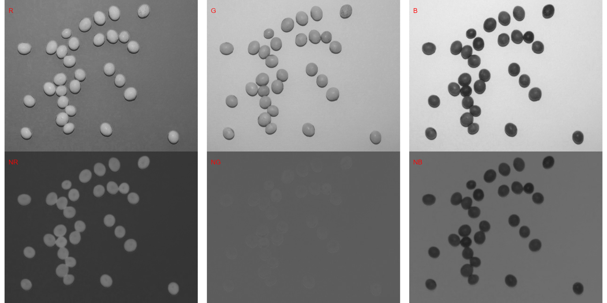
# Create a raster plot with the RGB values
plot(indexes)
#> Warning in levelplot.formula(value ~ id * y | spectrum, layout = c(ncol, :
#> device support for raster images unknown, ignoring 'raster=TRUE'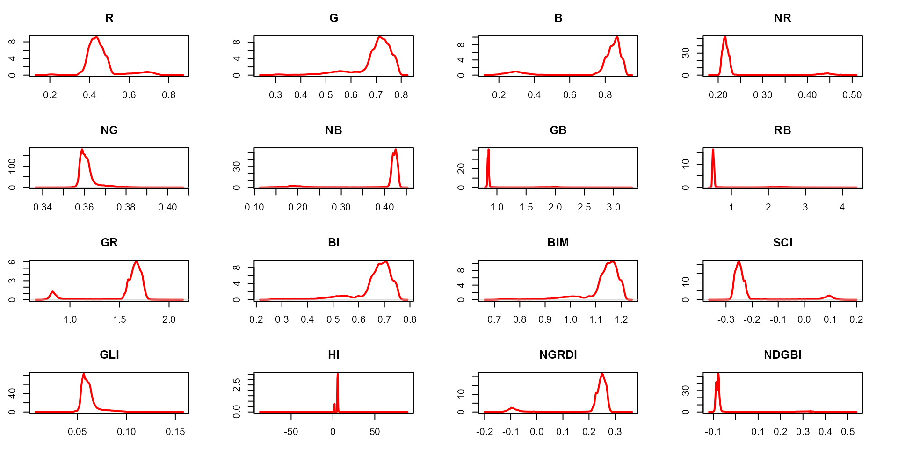
# Create a density plot with the RGB values
plot(indexes, type = "density")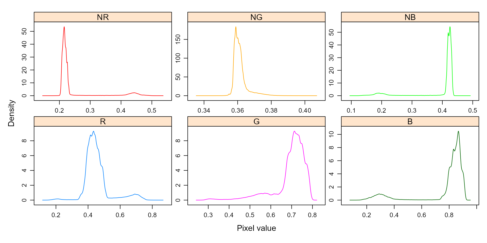
In this example, we can see the distribution of the RGB values (first row) and the normalized RGB values (second row). The two peaks represent the grains (smaller peak) and the blue background (larger peak). The clearer the difference between these peaks, the better will the image segmentation.
The function image_segmentation() is used to segment images using image indexes. In this example, I will use the same indexes computed below to see how the image is segmented. The output of this function can be used as input in the function analyze_objects().
segmented <- image_segment(soy, index = c("R, G, B, NR, NG, NB"))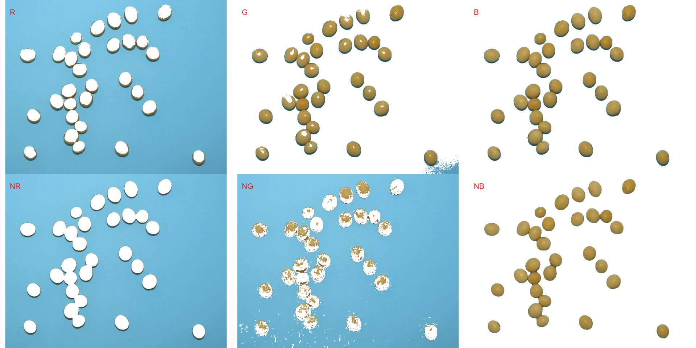
It seems that the "NB" index provided better segmentation. "R" and "NR" resulted in an inverted segmented image, i.e., the grains were considered as background and the remaining as ‘selected’ image. To circumvent this problem, we can use the argument invert in those functions.
image_segment(soy,
index = c("R, NR"),
invert = TRUE)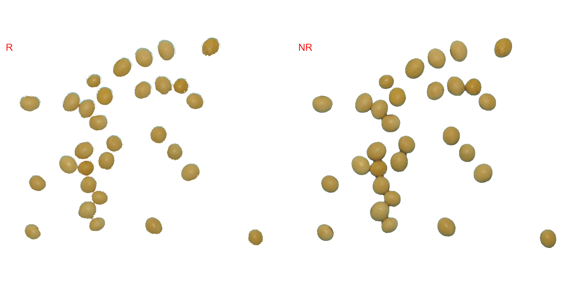
The function image_segment_iter() provides an iterative image segmentation, returning the proportions of segmented pixels. This is useful when more than one segmentation procedure is needed. Users can choose how many segmentation perform, using the argument nseg.
seg_iter <- image_pliman("sev_leaf_nb.jpg", plot = TRUE)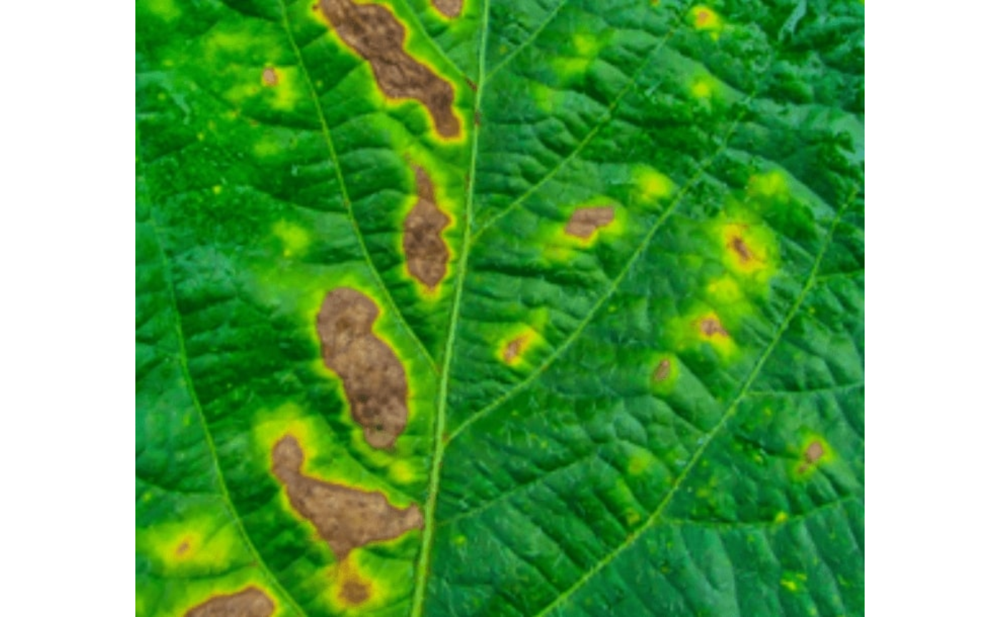
Using a soybean sample leaf (above), I will use the function image_segment_iter to segment the diseased tissue from healthy tissue. The aim is to segment the symptoms into two classes, namely, necrosis (brown areas) and chlorosis (yellow areas), and compute the percentage of each symptom class.
First, we need to find a suitable index for segmentation.
# First segmentation
seg <-
image_segment(seg_iter,
index = "all")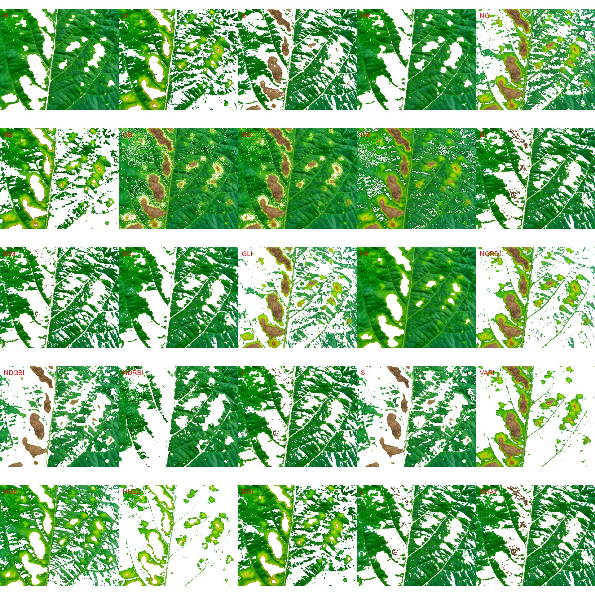
# second segmentation
seg2 <-
image_segment(seg$VARI$image,
index = "all")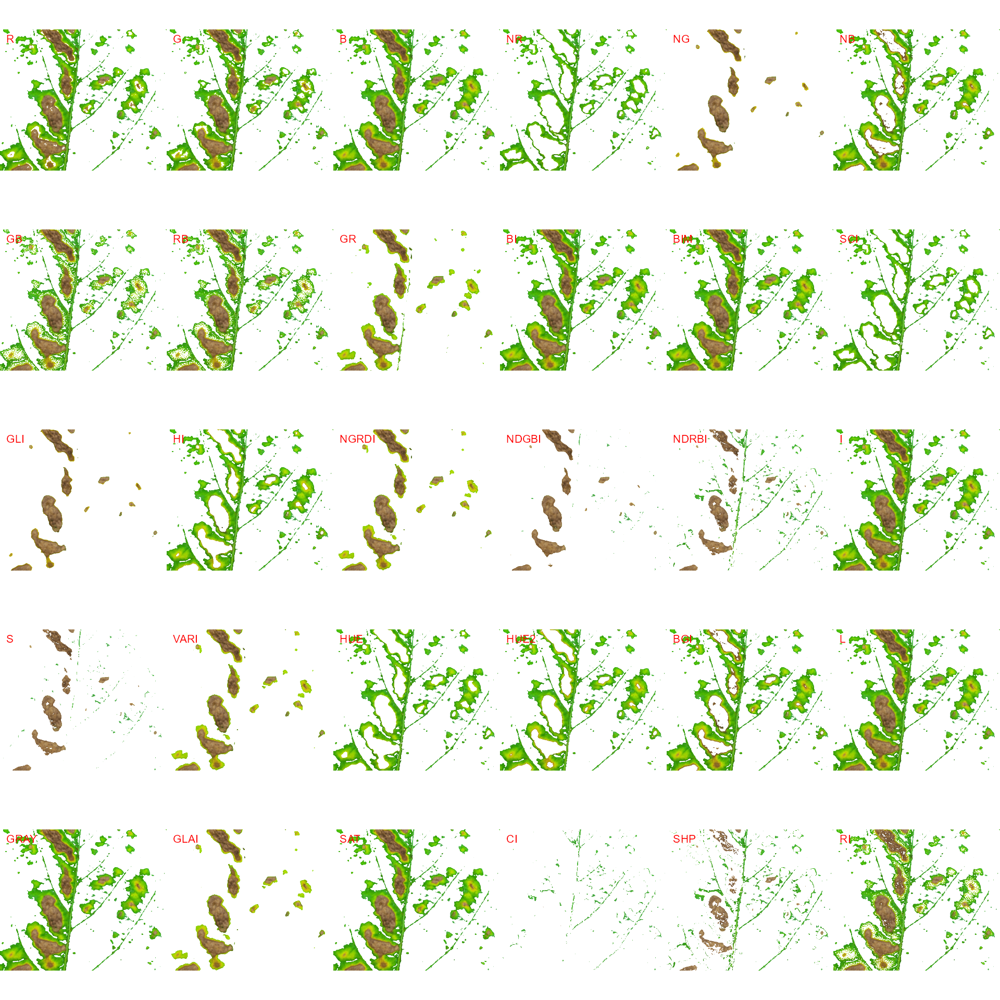
Note that the same results can be obtained with image_segment_iter() using an iterative section.
# Only run iteratively
image_segment_iter(seg_iter, nseg = 2)The "VARI" seems to be a suitable index to segment symptoms (necrosis and chlorosis) from healthy tissues. The "GLI" can be used to segment necrosis from chlorosis. Knowing this, we can now use image_segment_iter() explicitly indicating these indexes, as follows
image_segment_iter(seg_iter,
nseg = 2, # two segmentations
index = c("VARI", "GLI"),
ncol = 3)
#> image pixels percent
#> 1 original 1317600 100.00000
#> 2 seg1 399075 30.28802
#> 3 seg2 103464 25.92595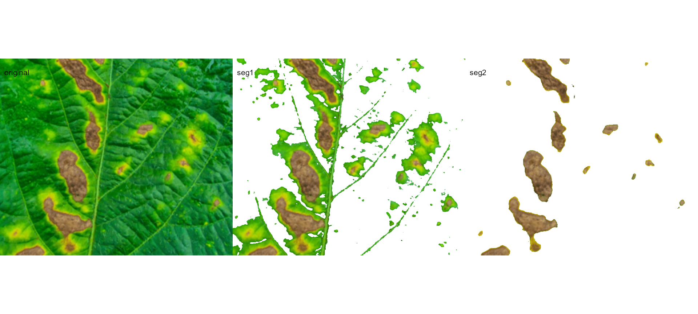
It can be observed that 30.28% of the original image were characterized as symptoms (both necrosis and chlorosis). Of out this (symptomatic area), 25.92% are necrotic areas. So 7.85% of the total area were considered as necrotic areas (30.288 \(\times\) 0.2592 or 103464/1317600 \(\times\) 100) and 22.43% (30.28 - 7.85 or (399075 - 103464) / 1317600 \(\times\) 100) were considered as chlorotic areas.
Users can use the argument threshold to controls how segmentation is made. By default (threshold = "Otsu"), a threshold value based on Otsu’s method is used to reduce the grayscale image to a binary image. If a numeric value is informed, this value will be used as a threshold. Inform any non-numeric value different than "Otsu" to iteratively chosen the threshold based on a raster plot showing pixel intensity of the index. For image_segmentation_iter(), a vector (allows a mixed (numeric and character) type) with the same length of nseg can be used.
seg_iter1 <-
image_segment_iter(seg_iter,
nseg = 2, # two segmentations
index = c("VARI", "GLI"),
threshold = c(0.3, "Otsu"),
ncol = 3,
show_image = FALSE)
#> image pixels percent
#> 1 original 1317600 100.00000
#> 2 seg1 195288 14.82149
#> 3 seg2 95151 48.72342
seg_iter2 <-
image_segment_iter(seg_iter,
nseg = 2, # two segmentations
index = c("VARI", "GLI"),
threshold = c(0.5, "Otsu"),
ncol = 3,
show_image = FALSE)
#> image pixels percent
#> 1 original 1317600 100.00000
#> 2 seg1 321729 24.41781
#> 3 seg2 101883 31.66733
image_combine(seg_iter1$images$seg1,
seg_iter2$images$seg1)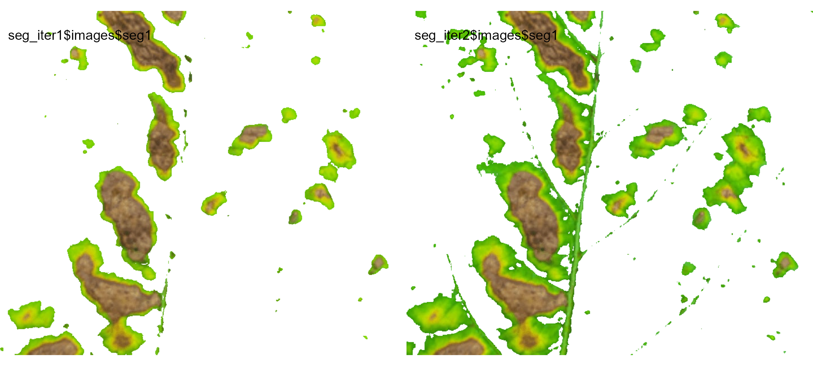
Users can then set the argument threshold for their specific case, depending on the aims of the segmentation.
We can also produce a binary image with image_binary(). Just for curiosity, we will use the indexes "B" (blue) and "NB" (normalized blue). By default, image_binary() rescales the image to 30% of the size of the original image to speed up the computation time. Use the argument resize = FALSE to produce a binary image with the original size.
binary <- image_binary(soy)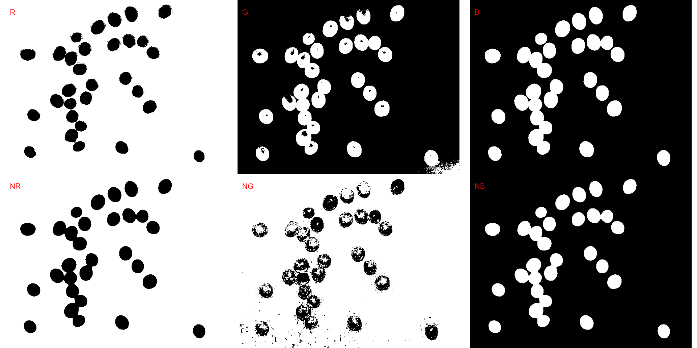
# original image size
image_binary(soy,
index = c("B, NB"),
resize = FALSE)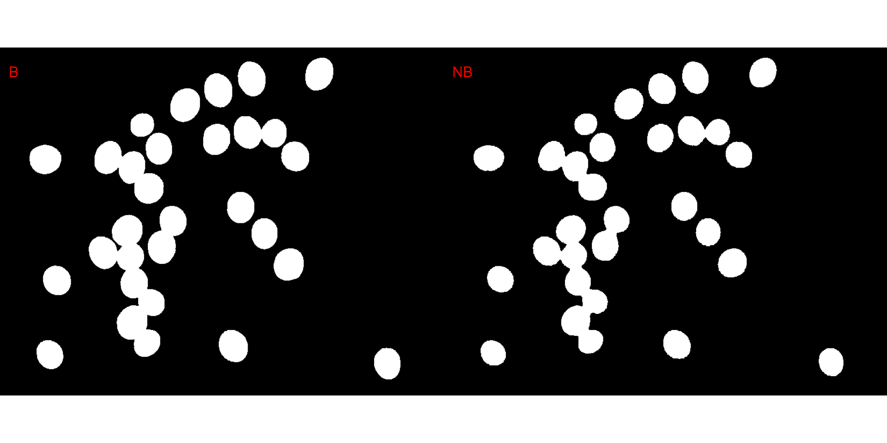